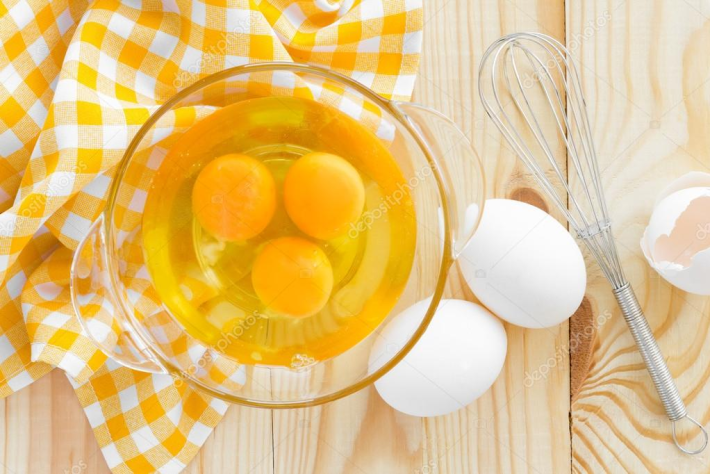

- Взбить яйца, добавить сахар и вновь взбить.
- Добавить кокосовую стружку, перемешать.
- Высыпать муку с разрыхлителем, снова перемешать.
- Убрать тесто в холодильник на 30 минут.
- Руки смочить водой и сформировать из теста печенье.
- Выпекать при температуре 180 градусов около 15 минут.